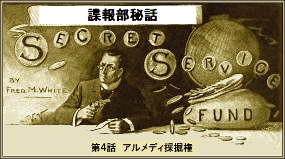
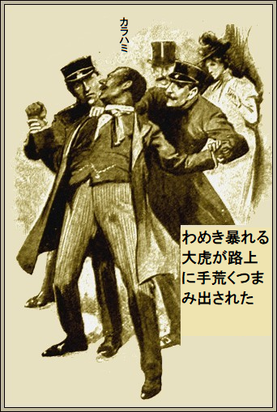
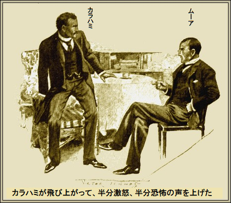
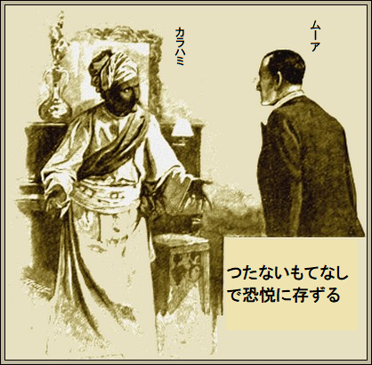
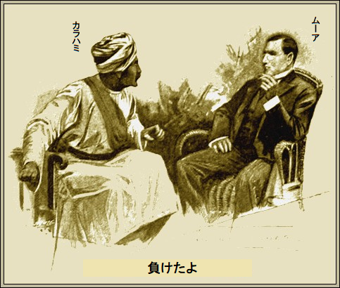
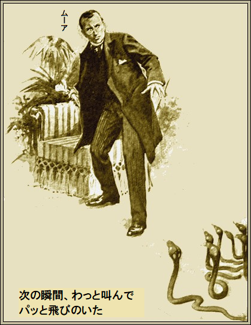

［＃改ページ］
「チャールズ卿、ひどい事件ですね。必ず対処します」
とニュートン・ムーアが答えた。
チャールズ・モーリィ卿がニヤリ。外務省の大御所チャールズ・モーリィ卿が全幅の信頼を寄せているのが、この有名なムーア諜報部員、その手法を高く評価している。
「常識外れの事件だから、要点を教えておこう」
面白い話をチャールズ卿がする羽目になった。
インド国境の北西に広大な山岳地帯があり、温厚なアルメディ族が統治している。時がたち、生まれながらの戦士であるアルメディ族は、インド政府と深刻なゴタゴタを引き起こすようになった。
戦略的にあの地域は難攻不落だが、アルメディ族の忍耐強さと言い、胆力と言い、尊い血はもちろんのこと、実に驚くべきものであり、現在、アルメディ国はロシア南進の緩衝地帯となっている。
いまこの国はとても平穏、英国の
やがて、神出鬼没の英国冒険家がアルメディ国に入り、住み着いた。茶の木を植えて収穫し、鉱物資源を探索し、見つけた。
必然的に企業が進出し、カラハミ大公から大規模な採掘権をもらい、見返りに総額五万ポンド余りの大英銀行約束手形を、浅黒い肌の支配者カラハミ大公に渡した。
この
当然、企業代表が出向いて大公を訪ねたところ、新たに金を要求するものだから、
チャールズ卿が説明した。
「実をいうと、確信しているのだが、スタンモア社長と秘書のリバー氏はカラハミ大公の策略で金を奪われたうえ、
「インドのことは何も知りませんが、ご命令とあれば何事も引き受けます」
チャールズ・モーリィ卿が笑みを浮かべ、
「君を高く買っているので、余計な危険にさらすわけにいかん。仕事はロンドンで完結するよ」
「嬉しくないとは言いませんが、やり方が全く分かりません、チャールズ卿」
「カラハミ大公がロンドンにいるんだ」
「ええっ。新聞に書いてないとは変ですね」
チャールズ卿が淡々と言った。
「たびたび、大公は極端な隠密行動をとる。たまたま分かったのだよ。もちろん前から間違いないと確信しているのだが、スタンモア社長とリバー氏はカラハミの策略で殺された。何カ月も約束手形が銀行に戻るのを待っていた。その一枚が、きのう現金化され、カラハミの署名が裏書きにあった」
「バカじゃないですか」
とムーアが叫んだ。
「とんでもない。だが大酒飲みだってことは署名でわかる。間違いなく大公の署名だ。手形をたどるとユーストン通りの小さな煙草屋が出所で、店主によれば額に傷のある浅黒い紳士が持ってきて、上客だと言う。その人相ならカラハミとぴったり一致するし、
ムーアが深くうなずいた。やり方が分かり始めた。
「この
「ムーア君、その為に教えたのだよ。カラハミは事実上イギリス国民だ。今もここに住んでいるし、君か誰かが真実を調べて、大公の容疑を確定すれば、普通の犯罪者と同様に逮捕できる。君のやり方で追い詰めて、白状させてくれ」
ムーアがほほ笑み、うなずいて、
「そういうことですか。外務省はごたごたを恐れて関わろうとしませんね。私のような一介の個人は気にくわないかもしれませんが、その代わり失った書類のことは秘密にできます、例の正副・署名入りの採掘権利書です。私に一任されました。これが解決すれば、今後ロシア会社を寄せ付けません」
チャールズ・モーリィ卿より地位の低いムーアがウィンクしかねなかった。とにかくモーリィ卿は笑って承認し、
「以上が君にやってもらいたいことだ。さらに情報をつかんだら、喜んで提供しよう」
「少し欲しいですね。手形が現金化された煙草屋の住所と、オクスフォード学生の住所です。同大学の奇妙な事件関係者の住所です。これさえ分かれば、きっと成功します」
チャールズ・モーリィ卿が手書きの紙をムーアに渡して、
「これが必要だろう。任務はきっと成功するよ」
ムーアはすぐ仕事に取り掛かった。週末には欲しい情報がすべて手に入った。オクスフォード滞在三、四日で驚くべき成果が得られ、今や残った仕事といえば、諸悪の原因男と面識になることだった。
あのカラハミなら早晩ユーストン通りの煙草屋に立ち寄るとムーアは確信した。三晩も薄汚い場所をうろつき、四日目の晩にやっと、ものにした。
通りざまムーアが見れば最高級の衣装を着ている。フロックコートにシルクハットはボンド通りを思わせる。だが男は疑いなくインド人。煙草屋にはいったのでムーアもつけた。
「いつもの煙草を一箱。それと、この手形を現金化してくれ」
と浅黒い男が注文。話しぶりでツーカーの間だ。
奴が手形に裏書するのを見てムーアが興奮した。予想通り、書きなぐりの署名だ。しばらくカラハミの後をつけた。メリルボーン酒場の前で立ち止まり、中にはいった。ムーアもすかさず入った。
カラハミはしばらく座ってぼんやり演奏を眺めながら、ぐびぐび飲んだ。ムーアは自席から顔をじっくり検分した。
酒が進むと、カラハミが騒ぎだした。黒眼がぎらつき、用心棒の店員を激しくどついた。二分後、わめき暴れる大虎はコートを大きくはだけ、路上に手荒くつまみ出された。野次馬が少々、浮浪者が一人か二人、頭上ランプをつけた警官が現場にいた。

警官が命令口調で、
「とっとと家に帰れ。さもないとしょっ引くぞ」
ムーアが前に進み出て、
「わかりました、おまわりさん。友人はちょっと興奮していますが、おとなしく帰宅させますから」
野次馬は散った。二人組の
カラハミが友人とやらを不審そうにジロリ。
「お前はいったい何者だ？」
ムーアは自分の名前をあっさり言い、前に進み出て、
「出しゃばるつもりはありませんでしたが、ほんの親切心から窮地を救っただけですよ。うまくいったようですね、おやすみ」
カラハミの疑念が消え、笑った。総じて笑顔は好きじゃない。実を言えば、インド人の笑みは嬉しくない。残忍と狡猾の含みがあるからだ。
「用心せねば、だろ」
「そうですよ。ですからお休みを言ったのです」
インド人が大笑いした。態度がころころ変わる。
「キミはいい奴だ。最高のダチ、だろ。ああ、故郷の人民がいま俺を見てくれたらなあ。俺はそんなに
滑稽なほど威儀を正した。正装しても人殺しの気配が漂う。ムーアが咄嗟に想像したのは原住民服を着て軍隊を率いる姿だ。
「失礼ですがお名前は？」
とムーアがしらばくれて
「カラハミ大公だ。だがここではジョーンズだ。密告するなよ。俺はおかしな奴だし、事実だ。人生の半分はロンドンでジョン・ジョーンズ、後の半分はインドの君主。衣装はソロモン王・並の栄光と謹厳そのものだぞ。そう思えないってか、ええ？」
「朝には忘れていますよ」
とムーアが慎重に言った。
「信じないのか、ええ？ さあ、一緒に飲み明かそう」
ムーアは魅惑的な誘いを断って、その代わり私の部屋で休んで、コーヒーかソーダ水かそんな物を飲まないかと提案した。カラハミに好意的な態度がはっきりと見て取れた。
＊
少し経って、
「なあ、キミはサツの犬とかそんなんじゃないだろ？」
「ええ、私は一介の諜報部員です」
カラハミが飛び上がって、半分激怒、半分恐怖の声を上げた。何らかの目的でここに誘い込まれたことはムーアの態度で明白だ。

「出してくれ。こんなところにゃおれん」
ムーアの答えは
「友人のオリバー・キングを知っていると思うが」
カラハミの顔色が薄茶色から、どす黒い黄色に変わった。唇も銀白色じゃなく灰色、どぎつさにムーアは身ぶるいした。
「一度も見てないぞ」
「殺しただろ？」
とムーアが厳しく問い詰めた。
かつてオクスフォード学生だった男がニヤリ、認めたかのように席を立った。ムーアは個人的に犠牲者を知らないが、おくびにも出さない。犯行の全容を詳細に知っており、目的の為にはそれで十分だ。
再びムーアが男の顔を覗き込んだ。ここに誘い込んで目的を達するためだ。カラハミは汗が吹き出て、眼が野獣のよう。
ムーアがもう一本煙草に火をつけ、席に座り直し、穏やかに言った。
「隠すつもりはないが、君をしばらく探していた。探していたのは仕事の為だ。君が騒ぐから英国に居ることが分かった。独自の調査で残りも判明した。私の判断で今晩、君を殺人罪で逮捕できる」
カラハミは
「ゆするつもりか。大金を持っていると知ってのことか」
ムーアが相変わらず穏やかに続け、
「五万ポンドの英国銀行約束手形を持って来ただろ。手形を追跡されるとは思いもよらなかっただろう。そこが門外漢の泣き所だ。私の胸三寸で金は取り上げられる」
「半分やるぞ」
とカラハミがしわがれ声で誘惑した。
「一銭たりともいらん。別なものを払うことになる。いいか、私が会ったのはクリチェット、デントン、マンラブ、グレース・デンビーだ。それに多くの証拠がそろったのでオクスフォード殺人の逮捕令状が取れる。当時の政府は事件を揉み消す選択をしたかもしれないが、私人が捜査請求すればこの地上で君の首を守れる機関は存在しない。グレース・デンビーの証言だけでも君を
カラハミは顔に冷汗をたらしながら聞いていた。眼には同じく恐怖が、裏には同様の恐怖殺人が隠されている。
「なんで俺を責める？ 何が欲しいんだ？」
「君がスタンモア社長を策略で殺したあと、死体から盗み、
「でも俺はやってない。絶対ない。もしロシアが嗅ぎつけたら、そんなこともあろうが……」
不意に止めたのは喋りすぎたと悟ったかのよう。よく分った、ムーアは無駄に空威張りしない。
「言おうとしたことは分かるよ。だがロシアの件は君に迷惑はかけない。二つの選択肢を示そう。絞首台か権利書の原本だ」
「ポケットにゃ持ってない」
「そうだろうよ。問題はだ、英国にあるかだ。なけりゃもう一枚つくらせて、あした署名させる。だが原本があれば、ずっといい」
カラハミがふさぎこんで床に目を落とした。
あたかも返事を引き出されたかのように、
「書類はこの町にある。俺は破滅だ。しかしキミは初志を貫く。俺の住所はクラレンドン広場十七番地だ。明日の二時に一緒に昼食しよう、そうすれば書類はキミのものだ」
ムーアが一瞬
「行くよ」
と落ち着いて言った。
今の所ムーアは成功している。とても平凡な事件になりつつある。カラハミ大公がおとなしく権利書を渡せば任務終了だ。
だが、そうするだろうか。朝食代わりの煙草を吸いながらムーアは思案した。想像力の乏しいものなら、ただのお役人仕事だと片付けかねない。しかしムーアは並の人間ではない。痛いほど妄想が湧く。
さらにムーアの評価するところ、カラハミ大公の知能はかなり高い。両眼は悪魔のようだが、知性が光っている。戦わずしっぽを巻くような男じゃない。奴が暴力に訴えるかどうかは別問題だ。
ムーアが独り言、
「とにかく行かなくちゃ。今となっちゃ引き返せない。東洋人の残酷・ずる
時間が迫るにつれ不安、
今まで想像力がたびたび役に立ち、得たものは広い意味でべらぼうなものだった。今回の獲物も高価だ。
心臓が口から飛び出しそうで、自己嫌悪で胸糞が悪くなりながら、ムーアはクラレンドン広場へ馬車で向かった。
半世紀前の当地は華やかだったが、こんにち陰気な家がポツンポツンとよそよそしく立っているに過ぎない。なかでも一番陰気で薄汚れた家に馬車が止まった。
ムーアがつぶやいて、
「好かんなあ。死体が何カ月も腐ってるような所だ。その気になればこうも寂しいロンドンになるものか」
＊
ムーアがベルを乱暴に引くと、中で耳障りな不協和音が響いた。地味な制服を着た下男が扉を開けた。訓練された召使いという雰囲気だが、風貌は明らかに東洋人だ。
召使いに案内され、薄暗い広間を通り、着いた裏部屋は対照的にとても明るく華やかだった。
「大公はまもなくお越しなさいます」
と召使いがささやいて下がった。
腹心のアルメディ人召使いに違いない。おそらくこの家の召使はみな同じカースト階級だろう。確かに一分か二分して、扉が開いてカラハミがはいってきた。
「つたないもてなしで
と

ムーアが驚いて大公をしげしげ見つめた。かりそめの欧州発音が消え、外套が消え、欧州儀礼が消えている。
その代わり、すっくと立ったインド大公は厳粛、威厳を保ち、仰々しい衣装たるや頭に宝石をちりばめたターバンを巻き、足元に真珠を刺しゅうしたスリッパを履いている。
「殿下、ご
大公が笑ったのは虚栄心がくすぐられたからだ。
「座りたまえ。たびたび大公を演じて楽しんでおるが、今回もそうだ。キミがここへ来たのは国家の重大案件を論ずるためだな。はっきり言えば……」
「殿下にお約束を果たして戴くためでございます」
カラハミが堂々たる気品と優雅を
実はカラハミ大公の本性そのものだった。大公の別な側面として下士官もどき
カラハミは煙草をつけ、ムーアに箱を回し、こうのたまった。
「本件は決着したと思っている。結論として、率直に言おう。キミは恐ろしいほど私の急所を握っている。ロンドンにいる限り、キミの地位なら私を常習犯罪者に落とせる。個人的にはそうするつもりはないと見たが」
カラハミが話を止めたので、ムーアが身構えた。ひょっとしてこの優雅で威張りくさった吸血大公は前夜飲み過ぎて二日酔いのふとどきものじゃないのか。
「お約束以外のことをするつもりはございません」
「事件に個人的恨みのないことがよくわかった。キミの政府は本件が
「殿下、恐縮でございます」
「それには及ばぬ。キミは分別があり、如才ないし、勇気がある。私の手の内を見て、こう言わしめた。ペテン師とか、詐欺師とか、通り魔とか。ロンドンではやむなく受け入れざるを得なかった。あっちのインドなら何のためらいもなくキミを絞め殺せたろうに。ロンドンにちょっと長く居る必要があった。そうじゃなければ今日ここにキミはいなかった。ロシアに対して恥をかかせたことをご存じか」
「義務で動いております。ここへ来たのはお約束の採掘権利書の為でございます。それさえ手に入れば任務終了、口外いたしません」
「昼食のあと、権利書は渡す」
ムーアは嬉しかったが不安になった。この男は決してそんなにやすやす、
大公が銀のゴングを打ち鳴らすと、直ちに折り扉が開いて中部屋が現れた。二人の為に凝った昼食が置かれている。
中部屋には窓がなく、ただ美しく装飾された小さな温室があるのみで、食堂との仕切りに一対の青銅製の装飾門があった。ムーアが驚いて称賛した。芸術の感性に触れたからだ。
「何て美しい。なんてきれいな花やシダ植物だろう。この豪華門はすごく引き立ちますね。おそらく警備上はもちろん芸術上の理由で設置されたのでしょう」
大公が笑いながらテーブルについた。
「確かに警備上もだが、言葉どおりじゃない。温室のガラスはぶ厚くて猛獣にもびくともしないが、この門を作ったのはむかし食堂の向うにつがいのジャガーを飼っていたからだ。しかし狭かったので始末する羽目になった。このクラレンドン広場にジョーンズ名で静かに暮らすには、ここ何年も時々そうして来たのだが、用心する必要がある。さあさあ、このシチュー煮の
ムーアがちょっと赤面した。一瞬、心によぎったのは大公がここへおびき寄せて殺すのじゃないか。
「キミは賢い男だと尊敬しておる。だから信頼できる人に今の居場所を知らせていると思う。そうだろ、ムーアさん」
「その通りでございます、殿下」
カラハミが笑い、
「
これ以上吟味され趣味のいい食事はなかった。皿は少ないも、料理の達人が腕をふるっている。ワインも最高級、果物も熟し、冷やされ、香りもいい。
大公はライスカレーしか食べず、ワインは飲まず、大きな桃を四個、コーヒーを二杯飲んだ。煙草が運ばれると、温室の方に手を向けて、
「あっちで吸おう。急いでないだろ？」
「一時間ほどあります」
見事な門が開き、ムーアが入った。中は暑く、むっとして、花々の香りに圧倒されたが、満腹だったので、けだるい雰囲気にぴったりだ。
部屋は狭く、かろうじて肘掛椅子二脚、花やシダ類、古風なタンスが一
「タンスの三段目に権利書がある。出るとき取ってくれ」
ムーアの警戒心はゼロだった。扱った事件の中で、これ以上公正で明快なものはあり得ない。ムーアは煙草をふかし、
「もっとやっかいだと思ってました」
大公の目がギロリと動き、光った。メラメラ燃えている。

「負けたよ。強者なら常に分かる。そうでなきゃ何のためらいもなくキミを亡きものにした。そのつもりなら今すぐキサマを殺した。しかし実際は……」
大公が言い淀んで笑った。一時の激情が
「申し訳ないが、しばらく中座する。その間、キミは権利書を取り出し、楽しんで読み、本物だと確かめてくれ」
大公がスッと出て行った。青銅門を出て、無造作に閉めた。そのとき突然ムーアにピンと来たのは豪華な部屋だが、しょせん
いま大公が消えた。ムーアは飛び上がって門へ殺到。
上を見れば、かつて大きな窓が温室前にあったようだが、いまは青銅門ががっちりハマっている。門を固く閉められてしまった。逃げ道はない。
一瞬くらっとなったが、気を取り直した。まだ危険はないものの、身に迫ってることは確か。間違いなく恐ろしく狡猾な東洋人の
大公はムーアの警戒を計算済みだった。だから、用意周到にせねばならなかった。
ムーアは顔面蒼白、口をへの字に結び、部屋を横切ってタンスの前に立った。
「とにかく権利書だ。思うに、これは乗りかかったゲームに降りかかる試練であり、一挙に俺の力を奪おうとするのだろう。だが、まだ有利に運ぶかもしれない」
ムーアが引き出しを思いっきり引いた。余りにも乱暴だったので枠から全部引き出してしまい、思わず後ろへよろめいた。
一枚の紙がひらひら床に落ちた。すかさずひっつかみ、文書に目を光らせた。
次の瞬間、わっと叫んでパッと飛びのいた。完全に破滅を仕組まれてしまった。床には箱から出てきたものが、団子状になり、くねくね絡み合い、戦闘態勢になり、大きな芋虫のようにのたくっている。もつれがうねうねと縄状になり、二十ばかりの平らな頭が持ち上がり、しゅっしゅっと音を出した。

「しまった、コブラだ」
コブラだった。優に二十匹はいる。鎌首をもたげ、不気味な冷たい目でムーアを狙っている。冷や汗がどっと吹き出し、手足が震えた。いままでも多くの恐怖がムーアに襲いかかったが、蛇はない。
意味がわかった。これから恐怖の死が来る。今やっとわかったのは極悪非道なインド人の苦境脱出方法だ。
「ペットのコブラに誤って噛まれた」
というのが検死陪審の裁定になりかねない。
当座ムーアは狂った。勘の鋭い神経体質の為、強烈な圧迫を受けて、自制心を失った。
再び我に返った時、
カラハミがニタニタ笑うさまは
「取れ、取れ。満足したか、キリスト教徒め。命がけの書類だぞ。知ってればなあ。バカ豚めが。知ってればなあ」
ムーアは用心していたけれど、いい気になっていたのかもしれない。カラハミがほめちぎるのをうすうす感づいていた。それがすべてだった。
そのあとは、やけくそになって、狂ったように蛇を遠ざけた。ぞっとする悪夢だった。蛇がずるずる周りから攻めて来る。
鎌首をもたげ、鎌状の
やがて、ひときわ、すばしこい蛇が有毒な平頭をパッと突きだし、手をガブリ。
ギャー、ギェー、ムーアはまるで狂人だ。
痛みはそれほどひどくなかったが、すぐに
カラハミが吹き出し大笑いしたのにはびっくり。
「蛇は無毒だ。毒牙はあるが、分泌腺は抜いてある」
ムーアも照れ笑い。そのとき、にわかに意識が薄れたようだった。カラハミの言葉がぼやけ、意味が分からなくなった。
座っているのは太陽降り注ぐ盆地、コブラのとぐろが生け花の縄と化し、感覚のない手にまきついている。
幸せのはずだが、重い
そのとき巨大なバラが地上に傾き、一輪の匂い立つ赤く巨大な花で頭を叩かれ、再び正気に戻った。見れば、依然としてカラハミが格子から覗いている。ムーアは必死に意識を保った。
ムーアが
「今何て言ったか、あ、思い出した。蛇が無毒だと。うそつきめ、卑怯者。俺はもうすぐ死ぬ。あまりの妄想で勇気を奪われた。負けたよ。だが、もし俺が一時間以内に帰宅しないと、お前は逮捕される。ほんの二、三分前に言ったように、何の対策もせずここへは来ない」
カラハミがムーアをじっと見て、心配げに、
「恐ろしくないか」
「ちっとも。見ろ」
ムーアの両眼は澄み、輝いていた。自分に打ち勝った。カラハミが格子枠から手を差し出し、コブラに触った。一対の毒牙がカッと手に刺さった。カラハミが手も持ち上げて傷を見せた。
「これが嘘でない証拠だ。蛇は胸糞悪いが人畜無害だ。キミが妄想・神経質だと知っていたが、そんな勇気があるとは知らなかった。以前、これをやって完全に狂った男をたくさん見た。キミも同じだと思ってた。もしそうなったら、その権利書は持ち出せない。そういうことだから、わなをいろいろ仕掛けた。さあ、そこから出て、ブランデーを飲みたまえ。必要だろ」
カラハミが大きな青銅門をあけると、ムーアは這い出た。もう安心だが、神経の反動を恐れた。
格子枠をつかみ、体を支えた。ムーアがこみ上げる興奮をねじ伏せたのは狂乱寸前に追い込まれ、絶望になりながら、群がる悪魔の蛇と戦ったからだ。
興奮が去り、強人ムーアの身震いが止んだ。危険も終わった。カラハミの挑戦も最後の段階で失敗し、自らの敗北を認めざるを得なかった。直ちに
＊
しばらくしてムーアは馬車で家路に向かった。まだ疲れ果て、ふらふらだったが、気分は大得意、大勝利だ。
つぶやいた。
「小説の壮大なアイデアだな。死の恐怖、発狂の原因が恐ろしい無毒蛇とは。カラハミ大公の小細工を小説に使おう。もちろん、筋書きをメモする必要なんかない。忘れっこないもの」
了